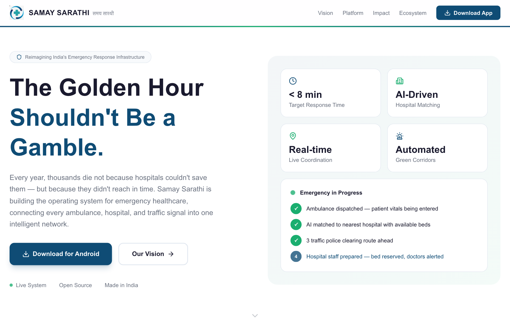
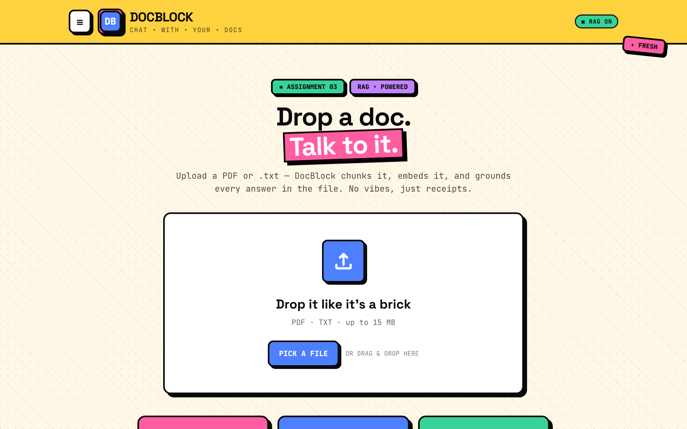
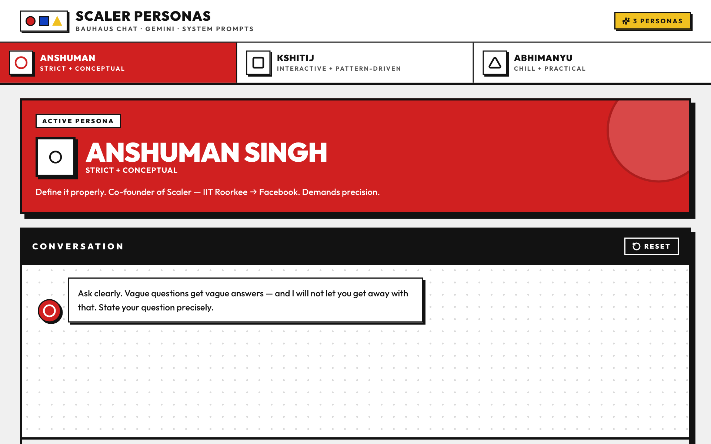
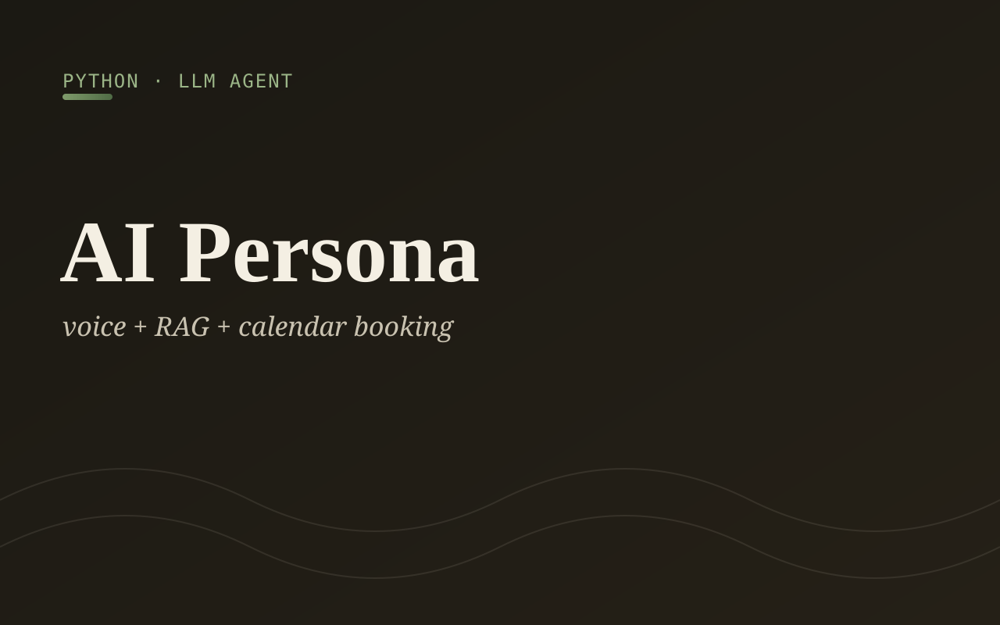
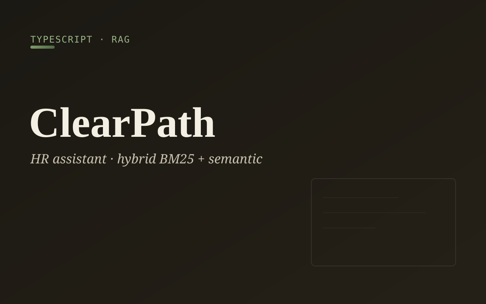
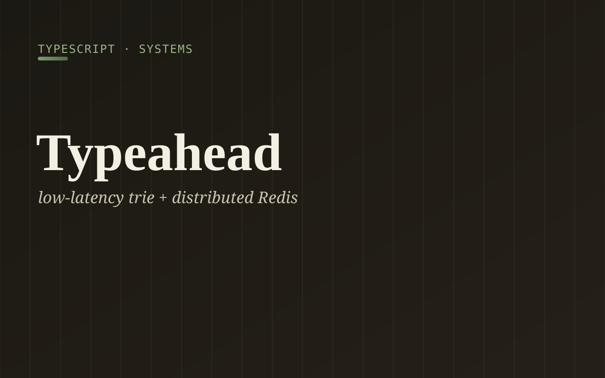
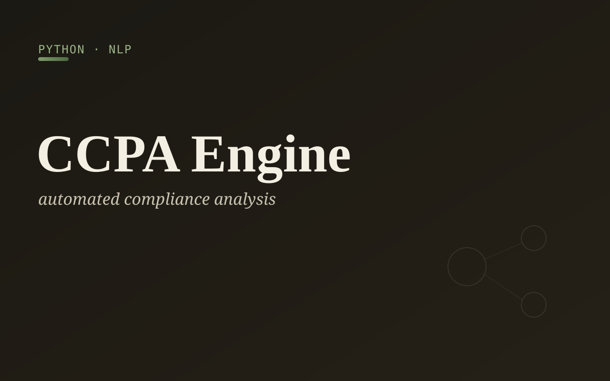
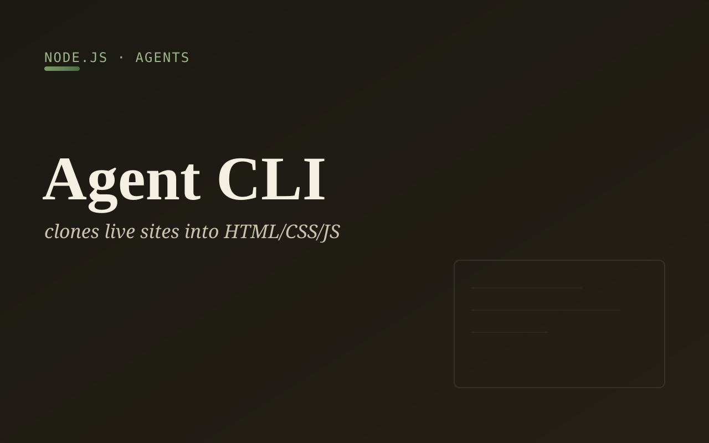
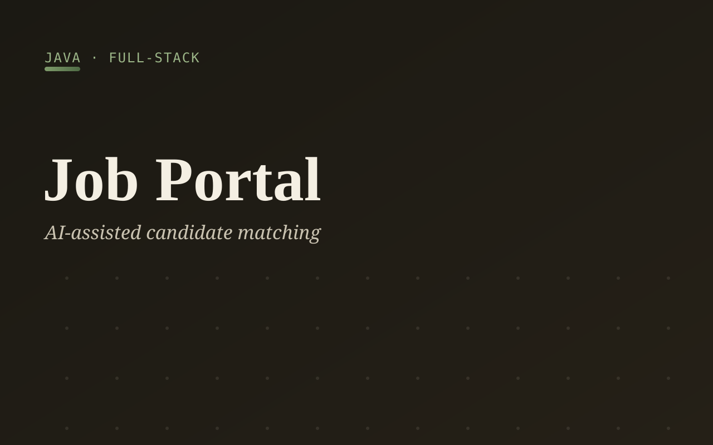

Samay Sarathi
Co-founded a national real-time platform connecting ambulances, hospitals and traffic police to protect the emergency “golden hour”. Presented at India Innovates 2026.
Jodhpur / Bengaluru, India
Full-Stack & AI Engineer, Open-Source Contributor.
I build products with an AI-first mindset using PythonReactNext.jsRAGPostgreSQL. I ship end to end and contribute to large open-source projects — 60+ merged pull requests across GRASS GIS, FOSSology and QGIS.
Scaler School of Technology · Bengaluru
GirlScript Summer of Code
Social Summer of Code (SSOC ’25)
Real-time products, RAG systems, LLM agents and backend systems. More on GitHub.

Co-founded a national real-time platform connecting ambulances, hospitals and traffic police to protect the emergency “golden hour”. Presented at India Innovates 2026.



A conversational AI representative — chat and voice, RAG over personal context, and real calendar booking.

An AI HR assistant answering policy questions with retrieval-augmented generation and hybrid BM25 + semantic retrieval.

A low-latency search typeahead: trie-based serving with a distributed Redis cache for fast prefix lookups at scale.

An AI system that evaluates a business’s data practices against CCPA requirements and flags gaps automatically.

A command-line AI agent with a step-by-step reasoning loop that clones a live website into working HTML, CSS and JS.

A full-stack job portal with AI-assisted matching between candidates and roles, built on a Java backend.
60+ merged pull requests to major FOSS projects, mostly under @Valyrian-Code. GitHub: Pull Shark (×2), Pair Extraordinaire, Quickdraw.
OSGeo · geospatial processing engine
Migrated legacy gunittest suites to pytest across raster and temporal modules, added regression tests, and fixed bugs in several tools (r.fillnulls, r.semantic.label, r.sim.water).
Linux Foundation · license compliance
Extended the official Python API client with wrappers for new endpoints (uploads, license import/export CSV, report import), added error-path tests, and fixed API bugs.
View PRs ↗QGIS.org · open-source GIS
Fixed bugs in the website’s commercial-contributors script — a division-by-zero on empty data and valid support URLs being dropped on transient link-check failures.
View PRs ↗Second-year Computer Science student at Scaler School of Technology. I treat AI as a leverage multiplier — building RAG systems, LLM agents and real-time products end to end — and I contribute heavily to open source. Admitted to the Apple Developer Academy (Università Federico II with Apple, 2026–27) on a full EU-funded scholarship.
Core technologies
GitHub activity — @RAJVEER42
Scaler School of Technology (SST)
Second year · CGPA 8.2 (SST), 8.7 (BITS Pilani). Coursework across Machine Learning, DBMS, systems and full-stack development.
Also admitted to the Apple Developer Academy (2026–27, Naples) on a full scholarship.
Open to internships, open-source collaboration and hard problems. The fastest way to reach me is email.